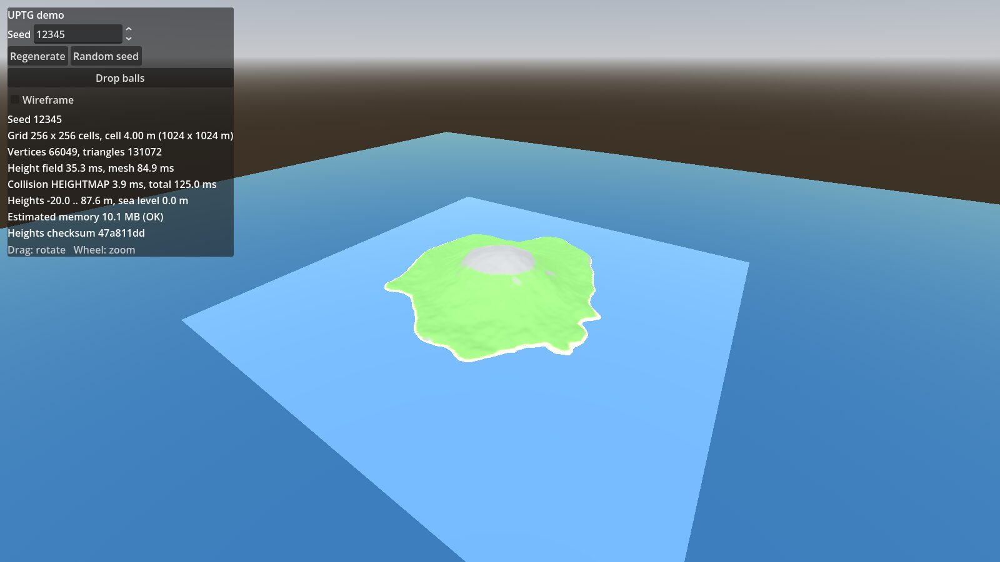
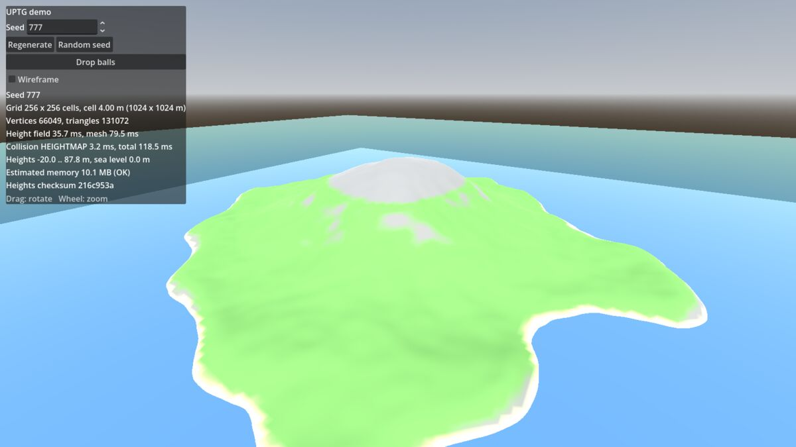
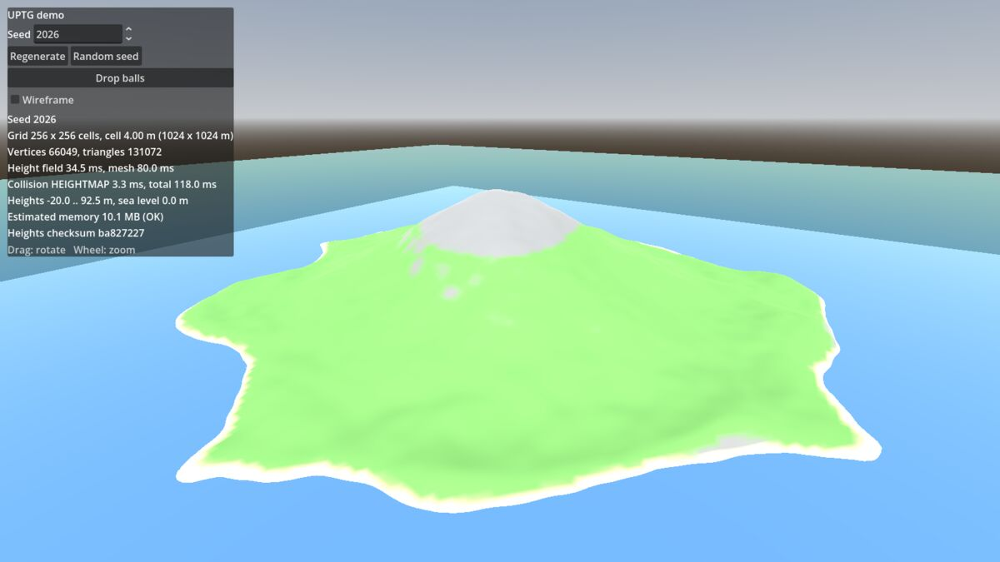

Work / Universal Game Tools
Universal Game Tools
A personal library of reusable, documented tools for Godot, designed so each one can be dropped into any game. The first module, UPTG, generates procedural islands: an irregular coastline, hills, a mountain region, a mesh and matching collision.
- Role
- Architect and reviewer: specification, the six design decisions, acceptance criteria, testing on my own laptop
- Built with
- Godot 4.7.2, GDScript, headless test runner; Godot Physics and Jolt
- Timeline
- 6 November 2026: from empty repository to release 0.1.0 in one day
- Status
- UPTG 0.1.0 released; road and world generators planned
- Code
- About 1,600 lines of addon and test code

Architecture before code
Game projects tend to grow tools that only work inside that one game. This repository exists to stop that: each tool is game-agnostic, ships as a Godot addon, and comes with a demo, documentation and tests.
Before the first line of code, the generator had a written specification and six decision records, each with the options considered and the one I chose:
- A data contract between the height field, the mesh and the collision, so each part can be replaced on its own.
- Heightmap collision by default, with a full triangle mesh or no collision as options.
- A square-cell grid with precise rules for where every vertex sits and how it is stored.
- Seeds and determinism: sub-seeds derived with fixed salts, global random functions banned from the addon.
- An addon layout that keeps core, builders, nodes, materials and presets apart.
- Cost protection: before generating, the tool estimates memory and refuses configurations that would freeze the machine, unless the node explicitly allows large terrains.
Work then went through four milestones on separate branches, each merged after its tests passed: data and height field, mesh and node, collision, and quality with presets and measurements.
Same seed, same island
Every island comes from a seed. The tests generate the same seed twice and compare checksums of all heights; a different seed must change them. That makes islands reproducible, which is what a game needs for saved worlds and shared maps.




Tested like a component
Seventeen acceptance criteria were written in the specification before implementation. Most are automated and run headless, without opening the editor:
- Mesh validity: indices in range, no NaN, unit normals, consistent winding, expected triangle count.
- Collision matches the mesh within 1 cm, measured with 2,000 vertical rays per case, on square and non-square grids, in both collision modes.
- 25 spheres dropped on the island come to rest on the surface; a character capsule walks 15 seconds up the mountain without sinking. Verified on Godot Physics and on Jolt.
- 20 regenerations in a row do not grow the number of nodes, objects or memory.
- The addon never references paths outside itself or any specific game, checked by text search.
Measured on a laptop
Godot 4.7.2, Windows, Intel UHD Graphics 620, default island preset, 4 m cells.
| Grid | Triangles | Height field | Mesh | Heightmap collision |
|---|---|---|---|---|
| 128 × 128 | 32,768 | 33 ms | 80 ms | 4.5 ms |
| 256 × 256 | 131,072 | 166 ms | 348 ms | 11 ms |
| 512 × 512 | 524,288 | 524 ms | 1,303 ms | 46 ms |
The measurements were then used to recalibrate the memory estimate, so the cost protection uses real numbers instead of guesses.
What comes next
The repository is laid out for three modules: the terrain generator, a procedural road generator and a world generator that combines them. The rule I set is that the next module starts only after the first one is tested and approved. All documentation is written in English and Italian.